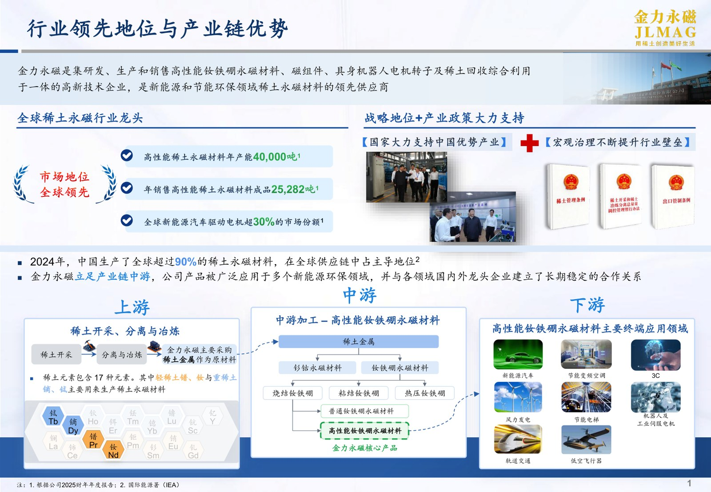
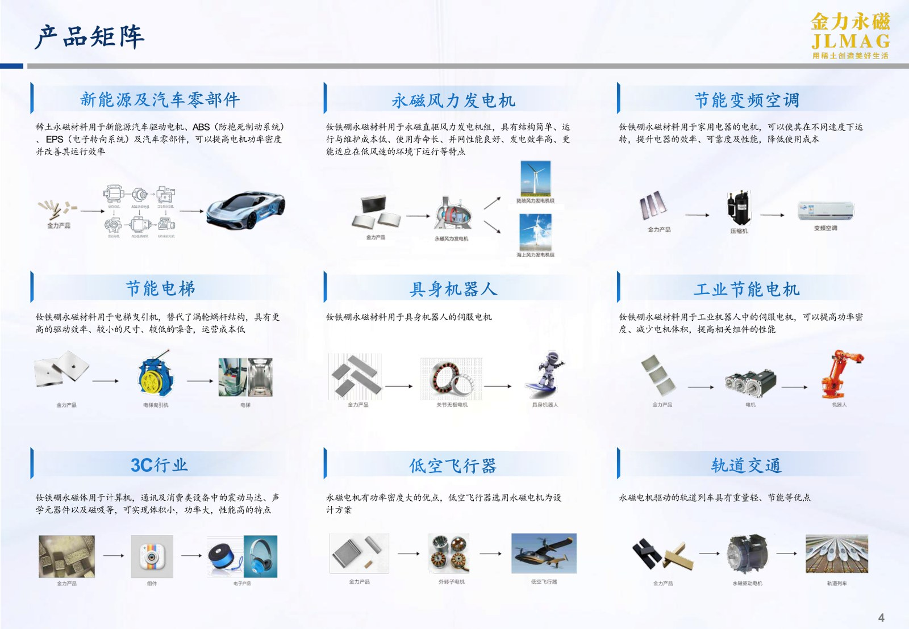
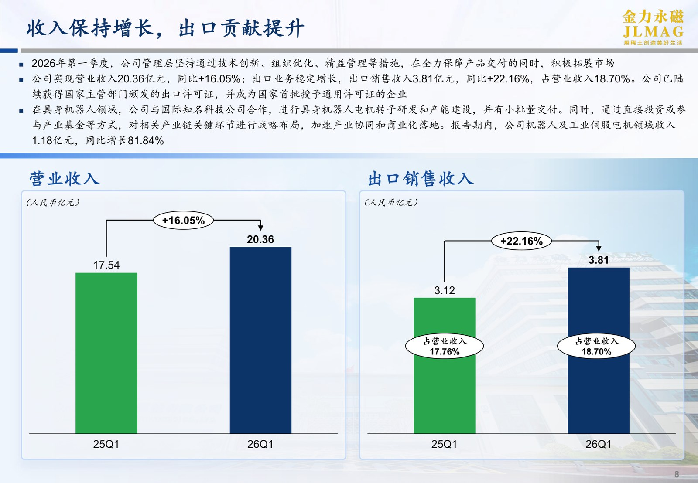

JL MAG RARE-EARTH 🇨🇳 (SZSE:300748)
Model biznesowy w obrazach

Pozycja lidera i łańcuch produkcji magnesów: upstream (wydobycie i separacja), midstream (przetwórstwo) i downstream (zastosowania końcowe). Źródło: JL MAG Rare-Earth, prezentacja inwestorska (kwiecień 2026).

Matryca zastosowań magnesów NdFeB: motoryzacja EV, turbiny wiatrowe, klimatyzacja energooszczędna, robotyka, 3C i transport. Źródło: JL MAG Rare-Earth, prezentacja inwestorska (kwiecień 2026).

Wzrost przychodów (+16% r/r) i przychodów z eksportu (+22% r/r) w 1Q26. Źródło: JL MAG Rare-Earth, prezentacja inwestorska (kwiecień 2026).
W kontekście: Łańcuch magnesów trwałych NdFeB i SmCo
Czym jest spółka. Założona w 2008 r. JL MAG Rare-Earth jest chińskim producentem wysokowydajnych magnesów NdFeB, komponentów magnetycznych i rotorów silników. Spółka ma siedzibę w Ganzhou, duży zakład w Baotou oraz 23 spółki zależne i oddziały. Jej akcje są notowane równolegle pod kodami 300748.SZ i 06680.HK.
Miejsce w łańcuchu. JL MAG nie wydobywa ani nie separuje pierwiastków ziem rzadkich. Działa w końcowej części łańcucha, przetwarzając kupowane tlenki i metale, przede wszystkim NdPr, w spiekane magnesy, komponenty magnetyczne oraz rotory. W FY2025 wyprodukowała około 34 400 ton wsadów i półwyrobów magnetycznych, a sprzedała około 25 300 ton wyrobów gotowych, odpowiednio o 17,31% i 21,25% więcej r/r.
Ekspozycja technologiczna koncentruje się na NdFeB. Produkcja magnesów SmCo, jej wolumen, moce i udział w przychodach są NIE UJAWNIONE. Oznacza to, że JL MAG uczestniczy w łańcuchu magnesów trwałych przede wszystkim przez materiał neodymowo-żelazowo-borowy, stosowany tam, gdzie znaczenie mają wysoka gęstość energii magnetycznej, małe rozmiary oraz sprawność silnika.
Zaplecze surowcowe. Około 72% wartości zakupów spółki pochodziło w FY2025 od Northern Rare Earth Group i China Rare Earth Group, czyli dwóch państwowych grup wydobywczo-separacyjnych. Recykling ogranicza tę zależność tylko częściowo: w 2024 r. surowiec wtórny odpowiadał za około 30% wsadu REE, w tym 2 575 ton materiału ze złomu i produktów wycofanych z eksploatacji. Dodatkowym elementem dywersyfikacji jest około 9,8% udziału w australijskim Hastings Technology Metals.
Znaczenie biznesowe: JL MAG kontroluje przemysłowo zaawansowany etap zamiany surowca REE w gotowy magnes, lecz nie kontroluje podstawowego źródła metali i pozostaje silnie zależna od chińskiego systemu podaży.
Dla inwestora: skalę produkcji należy analizować łącznie z bezpieczeństwem dostaw NdPr, udziałem recyklingu i zdolnością przenoszenia zmian cen surowca na klientów.
W kontekście: Popyt i zastosowania końcowe
Największym ujawnionym źródłem popytu są pojazdy NEV. W FY2025 segment ten wygenerował 3 941 mln RMB przychodu, o 30,31% więcej r/r. Drugim dużym zastosowaniem były energooszczędne klimatyzatory inwerterowe z przychodem 1 917 mln RMB, wyższym o 12,66% r/r. Robotyka i przemysłowe serwomotory przyniosły 300 mln RMB, rosnąc o 45,19% r/r.
Profil klientów wskazuje na szerokie osadzenie w produkcji silników i urządzeń końcowych. JL MAG zaopatruje 8 z 10 czołowych producentów sprężarek klimatyzacji samochodowej oraz 5 z 10 czołowych producentów turbin wiatrowych. Wśród wymienianych odbiorców znajdują się Tesla, BYD i Toyota. Umowa komponentowa z Teslą została podpisana 21.09.2020 i dotyczyła magnesów do silników w wersji RWD Model 3, ale wartość, wolumen, ceny i minimalne zobowiązania zakupowe pozostają NIE UJAWNIONE.
Nowym kierunkiem są komponenty magnetyczne oraz rotory dla robotów humanoidalnych. JL MAG utworzyła odpowiednią jednostkę biznesową w I kw. 2025 r., pod bezpośrednim nadzorem prezesa. Konkretni producenci robotów, wartość zamówień, wolumen seryjny i udział tej działalności w przychodach są NIE UJAWNIONE.
Geograficznie działalność pozostaje skoncentrowana na Chinach. Sprzedaż krajowa w FY2025 wyniosła 6 447 mln RMB, odpowiadała za 83,54% przychodu i wzrosła o 16,36% r/r. Eksport osiągnął 1 270 mln RMB, czyli 16,46% przychodu, przy wzroście o 3,92% r/r. Sprzedaż do USA wyniosła 501 mln RMB i zwiększyła się o 39,80% r/r.
Znaczenie biznesowe: popyt JL MAG opiera się na kilku równoległych falach elektryfikacji, lecz ekonomiczny ciężar działalności pozostaje w motoryzacji i klimatyzacji, a roboty humanoidalne są dopiero nieudokumentowaną kontraktowo opcją rozwoju.
Dla inwestora: dynamikę robotyki warto oddzielać od jej obecnej skali, ponieważ wysoka stopa wzrostu segmentu nie oznacza jeszcze istotnego udziału w przychodach całej spółki.
W kontekście: Mapa kluczowych graczy w łańcuchu
Łańcuch JL MAG zaczyna się u kontrolowanych przez państwo dostawców tlenków i metali. Northern Rare Earth Group i China Rare Earth Group odpowiadały za około 72% wartości zakupów surowca spółki w FY2025. JL MAG przejmuje materiał na etapie produkcji stopów, wsadów, spiekanych magnesów i komponentów, po czym sprzedaje wyroby producentom silników, pojazdów, sprężarek, turbin wiatrowych i automatyki.
Po stronie gotowych magnesów rynek tworzą liczni producenci chińscy oraz grupy japońskie i niemieckie. W rankingu 10 czołowych przedsiębiorstw wymieniono 9: JL MAG, Zhongke Sanhuan, Ningbo Yunsheng, Earth-Panda, ZHmag, Proterial, Shin-Etsu, TDK i Vacuumschmelze. JL MAG deklaruje, że od 2024 r. zajmuje globalnie pozycję nr 1 pod względem wolumenu produkcji i sprzedaży magnesów REE, a w 2025 r. ponownie ustanowiła rekord własnych wolumenów. Dokładny udział potwierdzony przez spółkę jest NIE UJAWNIONY.
W robotyce punkt odniesienia stanowi Ningbo Yunsheng, którego dostawy dla Agibot weszły w I kw. 2025 r. do produkcji seryjnej. JL MAG w tym samym okresie dopiero utworzyła jednostkę komponentów dla robotów humanoidalnych i nie ujawniła seryjnego kontraktu. Informacje o udziale Zhongke Sanhuan w dostawach do Tesla Optimus Gen2 pochodzą wyłącznie z raportów maklerskich stron trzecich i nie zostały potwierdzone przez producenta robota ani dostawcę.
Znaczenie biznesowe: JL MAG znajduje się pomiędzy skoncentrowanym, państwowym zapleczem surowcowym (dwie grupy około 72% wartości zakupów) a grupą globalnych odbiorców, gdzie pięciu największych klientów odpowiada za 45,08% przychodu; koncentracja konkurentów nie została ilościowo określona.
Dla inwestora: pozycja nr 1 opisuje wolumen, nie kontrolę surowca, przewagę patentową ani udział w zyskach całego łańcucha.
Ekspozycja na REE w liczbach
Przychody i rentowność. Cała działalność JL MAG jest związana z magnesami NdFeB i produktami pochodnymi, dlatego ekspozycja operacyjna na REE obejmuje 100% przychodu. Przychód całkowity FY2025 osiągnął rekordowe 7 718 mln RMB, o 14,11% więcej r/r, wobec 6 763 mln RMB w FY2024. Podstawowa działalność magnesowa wygenerowała 7 028 mln RMB, wzrosła o 19,00% r/r i stanowiła 91,07% przychodu.
Zysk netto przypisany akcjonariuszom wyniósł 705,61 mln RMB, o 142,44% więcej r/r, wobec 291,04 mln RMB w FY2024. Skorygowany zysk non-GAAP osiągnął 620 mln RMB i wzrósł o 264,00% r/r. Marża brutto wyniosła 21,18%, poprawiając się o 10,05 p.p. r/r. EBITDA za FY2025 wyniosła 915,93 mln RMB, ale jest to wskaźnik wyliczony przez agregator finansowy, a nie wartość ujawniona bezpośrednio przez spółkę. Gotówka na koniec FY2025: NIE UJAWNIONE.
Produkcja i moce. Spółka wyprodukowała w FY2025 około 34 400 ton wsadów magnetycznych i sprzedała około 25 300 ton gotowych wyrobów. Obecna moc produkcyjna jest szacowana na 40 000 ton rocznie, a cel na koniec 2027 r. wynosi 60 000 ton rocznie. Faza III zakładu w Baotou ma dodać 20 000 ton rocznej mocy przy inwestycji wynoszącej 1,05 mld RMB. Produkcja wyrażona w tonach REO lub NdPr jest NIE UJAWNIONA.
Innowacje i ekonomika surowca. Nakłady na B+R wyniosły w FY2025 505,7 mln RMB, odpowiadały za 6,55% przychodu i wzrosły o 57,60% r/r. Średnia cena metalu NdPr wyniosła 601 300 RMB za tonę, o 23,8% więcej r/r.
pie title Struktura geograficzna przychodów JL MAG w FY2025 "Sprzedaż krajowa": 83.54 "Eksport": 16.46
Struktura przychodów według geografii. Źródło: Raport Roczny JL MAG FY2025.
Znaczenie biznesowe: wzrost sprzedaży, produkcji i marży w FY2025 pokazuje jednoczesne zwiększenie wolumenu oraz poprawę ekonomiki działalności w okresie rosnącej ceny NdPr.
Dla inwestora: wyniki należy rozkładać na wolumen, cenę surowca, miks produktów i dotacje, ponieważ sam wzrost przychodu nie pokazuje, która część poprawy zysku ma charakter operacyjny, a która cykliczny lub administracyjny.
Kluczowe umowy - co znaczą
Tesla. Umowa komponentowa podpisana 21.09.2020 ma charakter ramowy: wartość transakcji zależy od przyszłych zamówień Tesli. Dotyczyła magnesów NdFeB stosowanych w silnikach wersji RWD Model 3, lecz nie ujawniono ilości, specyfikacji, cen, minimalnego wolumenu ani wartości finansowej. Nie ma podstaw, aby traktować ją jak take-or-pay lub zakontraktowany offtake.
Licencja eksportowa. 11.06.2025 JL MAG otrzymała chińską licencję na eksport wybranych produktów związanych ze średnimi i ciężkimi REE. Jest to decyzja regulacyjna, nie umowa sprzedaży ani finansowanie. Licencja umożliwia obsługę rynków eksportowych, lecz nie gwarantuje zamówień i może pozostawać zależna od polityki handlowej państwa.
Dotacje. W FY2025 spółka ujęła w wyniku 93,28 mln RMB dotacji rządowych związanych z normalną działalnością i krajową polityką przemysłową. Kwota ta odpowiadała 13,2% zysku netto. Nie jest to umowa odbioru, lecz wsparcie wpływające bezpośrednio na raportowany wynik.
Dostawy surowca i robotyka. Wiążące umowy offtake, take-or-pay, MOU, przedpłaty lub długoterminowe kontrakty zabezpieczające dostawy REE są NIE UJAWNIONE. Po utworzeniu jednostki robotyki w I kw. 2025 r. spółka nie ujawniła nazw klientów, wartości umów ani wolumenów produkcyjnych.
Znaczenie biznesowe: ujawnione relacje handlowe i regulacyjne zapewniają dostęp do klientów i eksportu, ale nie tworzą publicznie mierzalnego portfela minimalnych odbiorów.
Dla inwestora: umowę ramową z Teslą, licencję eksportową i dotacje trzeba traktować jako trzy odmienne kategorie pewności - pierwsza ustala relację handlową, druga warunkuje legalność eksportu, a trzecia wspiera wynik.
Pozycja rynkowa i udziały
JL MAG podaje, że w 2024 r. została największym na świecie producentem magnesów REE według wolumenu produkcji i sprzedaży, a w 2025 r. ponownie osiągnęła rekordowe wolumeny. Dokładny globalny udział według metodologii spółki pozostaje NIE UJAWNIONY.
Niezweryfikowany wpis finansowy szacuje udział JL MAG w globalnym wolumenie za 2024 r. na około 28%. Ponieważ publikacja nie wskazuje pierwotnego źródła ani metodologii, wartość ma charakter orientacyjny. W tym samym materiale udział Zhongke Sanhuan określono na ponad 15%, również bez pierwotnego potwierdzenia.
Kontekst strukturalny jest istotny: Chiny odpowiadają za około 85-90% globalnej produkcji magnesów NdFeB. Globalny rynek materiałów magnetycznych NdFeB miał wartość 14,65 mld USD w 2023 r., a prognoza na 2033 r. wynosi 28,53 mld USD przy CAGR 7,5%. Są to dane o rynku, nie prognoza wyników JL MAG.
Spółka zajęła miejsce 361 na liście Hurun China 500 za 2025 r. i weszła do indeksu MSCI China. Jej zakotwiczenie u odbiorców potwierdzają dostawy do 8 z 10 czołowych producentów sprężarek klimatyzacji samochodowej oraz 5 z 10 czołowych producentów turbin wiatrowych.
Znaczenie biznesowe: JL MAG ma pozycję lidera wolumenowego w rynku skupionym geograficznie w Chinach, ale obsługującym globalne branże elektryfikacji.
Dla inwestora: ranking nr 1 jest twardszym faktem niż niezweryfikowany udział 28%, lecz nie przesądza o marży, jakości technologii ani sile negocjacyjnej wobec dostawców surowca.
Mechanika konkurencji - na osiach
Skala i tempo wzrostu. JL MAG osiągnęła w FY2025 przychód 7 718 mln RMB, wyższy o 14,11% r/r, wobec 6 640,66 mln RMB przychodu Zhongke Sanhuan, niższego o 1,63% r/r. Zysk netto JL MAG wyniósł 705,61 mln RMB i wzrósł o 142,44% r/r, podczas gdy Zhongke Sanhuan osiągnął około 91,32-91,36 mln RMB przy wzroście o około 660,5-660,8% r/r. Porównanie pokazuje różnicę skali zysku, ale nie ujawnia różnic w miksie produktów, standardach rachunkowości ani strukturze kosztów.
Moce produkcyjne. JL MAG dysponuje mocą około 40 000 ton rocznie i planuje dojście do 60 000 ton rocznie do końca 2027 r. Plan opiera się między innymi na Fazie III Baotou, która ma dodać 20 000 ton rocznie. Wzrost skali może poprawiać obsługę dużych producentów, ale zwiększa znaczenie wykorzystania nowych mocy i dostępności surowca.
Integracja z klientem. Spółka jest obecna w motoryzacji, klimatyzacji, energetyce wiatrowej i automatyce. Przewagą jest szerokie osadzenie u producentów OEM, w tym obsługa 8 z 10 czołowych producentów sprężarek klimatyzacji samochodowej oraz 5 z 10 czołowych producentów turbin wiatrowych. W robotyce sytuacja jest mniej dojrzała: Ningbo Yunsheng weszła w I kw. 2025 r. do seryjnych dostaw dla Agibot, podczas gdy JL MAG ujawniła jedynie utworzenie nowej jednostki biznesowej.
Surowiec i integracja pionowa. JL MAG nie posiada własnego złoża ani działalności separacyjnej. Około 72% wartości zakupów pochodzi od dwóch państwowych grup. Odpowiedzią są recykling, odpowiadający w 2024 r. za około 30% wsadu REE, oraz około 9,8% udziału w Hastings Technology Metals. Dokładne koszty produkcji, krzywa kosztowa i porównanie jakości złóż są NIE UJAWNIONE.
Technologia i własność intelektualna. Rynek obejmuje konkurentów chińskich oraz firmy japońskie i niemieckie, historycznie silne w patentach dotyczących spiekanych magnesów wysokiej wydajności. Nakłady JL MAG na B+R wyniosły 505,7 mln RMB, czyli 6,55% przychodu FY2025. Pierwszy w branży certyfikat neutralności węglowej PAS 2060 dla wybranych produktów może wspierać obsługę klientów wymagających pomiaru śladu węglowego, lecz jego wpływ na ceny i wolumen jest NIE UJAWNIONY.
Wsparcie państwa. Dotacje wyniosły 93,28 mln RMB i odpowiadały za 13,2% zysku netto FY2025. Jednocześnie państwo kontroluje dużą część podaży surowca oraz licencje eksportowe, dlatego polityka publiczna działa zarówno jako wsparcie, jak i źródło zależności.
Znaczenie biznesowe: JL MAG konkuruje skalą, relacjami z OEM, rozbudową mocy i recyklingiem, lecz pozostaje słabiej zintegrowana surowcowo niż grupy kontrolujące wydobycie i separację.
Dla inwestora: kluczowe osie porównania to wykorzystanie mocy, rentowność przy zmiennej cenie NdPr, dojrzałość kontraktów robotycznych oraz zależność od państwowych dostawców.
Koncentracja odbiorców i ryzyka
Koncentracja klientów. Pięciu największych klientów odpowiadało w FY2025 za 45,08% przychodu, czyli łącznie 3 479,2 mln RMB sprzedaży. Największym nazwanym klientem była Grupa Gree, z zakupami o wartości 321,7 mln RMB, odpowiadającymi za 4,17% przychodu. Rozkład udziałów pozostałych dużych klientów jest NIE UJAWNIONY.
Mechanizm ryzyka nie polega zatem na ujawnionej dominacji jednego odbiorcy, lecz na istotnym łącznym znaczeniu grupy kluczowych OEM. Utrata programu pojazdowego, platformy silnikowej lub dużego producenta urządzeń może obniżyć wolumen, pogorszyć wykorzystanie mocy i zwiększyć presję cenową.
Koncentracja dostawców. Około 72% wartości zakupów przypada na Northern Rare Earth Group i China Rare Earth Group. Zakłócenie dostaw, zmiana kwot wydobycia lub separacji albo niekorzystne warunki cenowe mogą szybko przełożyć się na dostępność wsadu i marżę JL MAG. Recykling oraz udział w Hastings zmniejszają tę ekspozycję, ale jej nie eliminują.
Cykl cenowy NdPr. Średnia cena metalu NdPr wzrosła w 2025 r. o 23,8%, do 601 300 RMB za tonę. W tym samym okresie marża brutto JL MAG wzrosła o 10,05 p.p., do 21,18%. Nie oznacza to automatycznej zależności, ale pokazuje, że wyniki są wrażliwe na relację pomiędzy ceną surowca, ceną magnesów i tempem przenoszenia kosztów. W FY2024 zysk netto spadł o około 48% r/r, do 291,04 mln RMB, w niekorzystnym cyklu cenowym REE.
Ryzyko regulacyjne eksportu. Eksport odpowiadał za 16,46% przychodu FY2025, a sprzedaż do USA wyniosła 501 mln RMB i około 6,5% przychodu. Od 11.06.2025 eksport wybranych produktów związanych ze średnimi i ciężkimi REE wymaga licencji. Opóźnienie, ograniczenie lub cofnięcie zgody może utrudnić dostawy do USA, UE i Azji Południowo-Wschodniej, nawet jeśli zamówienia klientów pozostaną ważne.
Ryzyko dotacji. Dotacje rządowe ujęte w wyniku wyniosły 93,28 mln RMB, czyli 13,2% zysku netto FY2025. Ich ograniczenie nie zatrzymałoby podstawowej produkcji, ale obniżyłoby raportowany wynik, jeśli nie zostałoby skompensowane przez marżę operacyjną.
Ryzyko rozbudowy mocy. Przejście z około 40 000 ton do 60 000 ton rocznej mocy do końca 2027 r. wymaga uruchomienia dodatkowych 20 000 ton w Fazie III Baotou, finansowanej inwestycją 1,05 mld RMB. Opóźnienia mogą ograniczyć zdolność obsługi wzrostu, a słabszy popyt może obniżyć wykorzystanie nowych aktywów.
Ryzyko robotyki. Segment robotyki i serwomotorów przemysłowych wygenerował 300 mln RMB przychodu i wzrósł o 45,19% r/r, ale kontrakty z producentami robotów humanoidalnych, ich wartość oraz wolumen są NIE UJAWNIONE. Konkurent Ningbo Yunsheng już wszedł do produkcji seryjnej dla Agibot, więc samo utworzenie jednostki biznesowej nie potwierdza pozycji JL MAG w nowej niszy.
Znaczenie biznesowe: główne ryzyka łączą koncentrację dostaw surowca, cykliczność cen NdPr, zależność eksportu od licencji oraz konieczność zapełnienia rozbudowywanych mocy.
Dla inwestora: koncentrację warto mierzyć po obu stronach rachunku - top 5 klientów skupia 45,08% sprzedaży, ale jeszcze większa koncentracja występuje w zakupach, gdzie dwie grupy odpowiadają za około 72% wartości.
Słowniczek
- NdFeB - magnes trwały oparty na neodymie, żelazie i borze, powszechnie stosowany w wydajnych silnikach elektrycznych.
- SmCo - magnes trwały samarowo-kobaltowy, odporny na wysoką temperaturę i korozję.
- REE - pierwiastki ziem rzadkich wykorzystywane między innymi w stopach magnetycznych.
- NdPr - mieszanina neodymu i prazeodymu, podstawowy surowiec dla wielu magnesów NdFeB.
- Blanks - wsady lub półwyroby magnetyczne przed końcową obróbką i wykończeniem.
- REO - tlenki pierwiastków ziem rzadkich, standardowa forma raportowania surowca REE.
- NEV - pojazdy nowych źródeł energii, obejmujące przede wszystkim pojazdy elektryczne i inne zelektryfikowane układy napędowe.
- EBITDA - wynik przed odsetkami, podatkami, amortyzacją rzeczowych aktywów i amortyzacją wartości niematerialnych.
- Non-GAAP - miara finansowa skorygowana przez zarząd lub dostawcę danych o wskazane pozycje jednorazowe.
- OEM - producent oryginalnego wyposażenia lub gotowego produktu wykorzystującego komponent dostawcy.
- Offtake - umowa odbioru określonego produktu lub wolumenu w ustalonym okresie.
- Take-or-pay - kontrakt zobowiązujący klienta do odbioru albo zapłaty za uzgodniony minimalny wolumen.
- MOU - memorandum określające zamiary współpracy, zwykle słabsze prawnie niż wiążący kontrakt handlowy.
- CAGR - średnioroczna skumulowana stopa wzrostu w określonym okresie.
Źródła
- JL MAG - profil korporacyjny, działalność i notowania - https://www.jlmag.com.cn/en/
- JL MAG - Raport Roczny FY2025, finanse, produkcja, sprzedaż, koncentracja i dotacje - https://r.jina.ai/https://static.cninfo.com.cn/finalpage/2026-03-26/1225030339.PDF
- StockAnalysis - przychody, zysk netto i wyliczona EBITDA - https://stockanalysis.com/quote/she/300748/financials/income-statement/
- ChemNet - segmenty, marża, moce i cena NdPr - https://news.chemnet.com/news-3727.html
- Rare Earth Exchanges - recykling, Hastings, Baotou i relacje z odbiorcami - https://rareearthexchanges.com/news/jl-mag-rare-earth-co-ltd-chinas-magnet-heavyweight-built-for-the-electric-age/
- Global Trade Alert - licencja eksportowa na produkty związane z REE - https://www.globaltradealert.org/state-act/92032
- Herbert Smith Freehills Kramer - dual listing na HKEX - https://www.hsfkramer.com/zh_HK/news/2022-01/herbert-smith-freehills-advises-jl-mag-on-hk4045-billion-ipo-in-hong-kong-to-complete-ah-dual
- Chemical Research Insight - wielkość rynku i mapa producentów NdFeB - https://chemicalresearchinsight.com/2025/10/24/top-10-companies-in-the-ndfeb-permanent-magnet-material-industry-2025-market-leaders-driving-the-global-green-revolution/
- BigGo Finance - JL MAG, Ningbo Yunsheng i konkurencja w robotyce humanoidalnej - https://finance.biggo.com/news/ySk7z50B2jrwCtglFXMG
- Wyszukiwanie źródeł dotyczących umowy JL MAG z Teslą - https://r.jina.ai/https://duckduckgo.com/html/?q=JL+MAG+Tesla+2020+component+procurement+agreement+NdFeB+magnet+value+RMB
- Wyszukiwanie danych FY2025 Zhongke Sanhuan - https://r.jina.ai/https://duckduckgo.com/html/?q=%E4%B8%AD%E7%A7%91%E4%B8%89%E7%8E%AF+2025%E5%B9%B4%E8%90%A5%E6%94%B6+%E5%87%80%E5%88%A9%E6%B6%A6+%E5%B9%B4%E6%8A%A5
- Eastmoney - niezweryfikowane szacunki udziałów JL MAG i Zhongke Sanhuan - https://caifuhao.eastmoney.com/news/20250723072332143590750
- Wyszukiwanie informacji o umowach długoterminowych i przedpłatach - https://r.jina.ai/https://duckduckgo.com/html/?q=JL+MAG+300748+%E9%A2%84%E4%BB%98%E6%AC%BE+%E9%95%BF%E6%9C%9F%E5%8D%8F%E8%AE%AE+%E9%94%80%E5%94%AE%E5%90%88%E5%90%8C+%E5%AE%A2%E6%88%B7